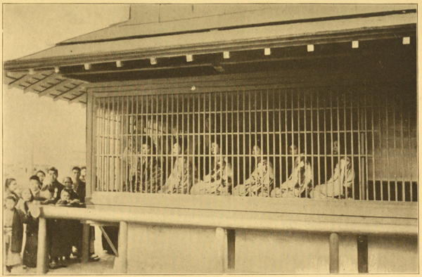

“The caged girls of the Yoshiwara”
A Woman Alone in the Heart of Japan (1906)
In Japan, prostitution prevails to a fearful extent, and obtrudes itself in a way I never witnessed elsewhere, unless, alas! I must except the Haymarket.
A Visit to Japan, China, and India (1877)
It is a very curious, though at the same time a revolting sight, to pass through one of these streets in the evening. A large room, the front one of each building, is only separated from the street by wooden rails in place of windows. Squatted down in a row, facing these railings, may be seen some twenty or more young creatures, dressed out in their gay robes, their black hair filled with trinkets, coloured crapes, or flowers, their faces, arms, and bosoms whitened with rice powder, and their lips and cheeks dyed red with the extract of the safflower. Before each of them stands a little black lacquered tobacco-box, or a box containing live coals, a place for tobacco-pipes, and a bamboo cup for a spittoon. Every now and then they take their miniature pipe, inhale once or twice, knock out the ash in the bamboo cup, and lay the pipe down for a minute or two. There is no indecency in their appearance; quiet, almost modest, they talk and laugh one with another in their childish manner, as though quite unconscious of the lookers-on: for in the street, with their faces fixed against the bars, with others leering over their shoulders of the first row, are numbers of the shaven-headed, libidinous lords, searching out their partners. One by one the girls get up and disappear, till at ten o’clock perhaps only one or two solitary creatures are left, half sleeping amid the smoking lamps.
Japan, the Amoor, and the Pacific (1861)
The most crying of the national vices is undoubtedly licentiousness. This fact will present itself in rather a startling form to the visitor who finds himself after night-fall entering or leaving the city by one or other of the high-roads. A spacious well-lit street; on each side a line of buildings like handsome inns, gay with paper lanterns and the strains of music, and exposing to view through windows, or rather wooden gratings, which occupy almost the entire lower storeys, rows of gaily dressed and powdered women;—such is in brief the sight which will meet his eye. There they squat stolidly beside their charcoal brasiers, in most cases looking miserable enough, poor creatures.
The Land of the Morning (1882)
Though the “social evil” is never an agreeable subject to treat of, it enters into the manners and customs of the people in a manner so singular, and at the same time so prominent, that no account of Japan would be complete without some allusion to it. The same order which governs all the other institutions of the country is applied to this one. There is nothing slovenly in the mode of administration here. Vice itself is systematised. Thus courtesans are divided into four classes, and are held in various degrees of estimation according to their rank in the social scale. Two distinct quarters of this vast city of Yedo are set apart for purposes of debauchery. The eastern suburb, which seems to be frequented by the middle and lower classes, contains persons of the second and third class, and is simply a den of infamy where the poor creatures flaunt about the streets, as they do in our own large cities.
Sinagawa, however, is the resort of the aristocracy. Hither noblemen repair with their wives and families, to pass an hour or two in the society of women who are considered the most highly accomplished of their sex. Not only are they expert in music, singing, painting, dancing, and embroidery, but it is said that they are highly educated, and charm by reason of their conversational powers.
Although it is usual to visit such resorts “nayboen,” it is considered no disgrace for the master of the house to be accompanied by the female members of his family. Nor is it any uncommon thing for a man of rank to choose his wife from an establishment of this description. That a woman should have been brought up in one of them operates in no way unfavourably against her in a social point of view; nor after her eyebrows are pulled out, and her teeth blackened, is she less likely to make a good wife than any one else. It would indeed be somewhat unfair upon her if she suffered for this accident of her early life, for she is bought as a mere child by the degraded men who speculate in this trade, of indigent parents, who are unable to maintain a family of girls, and at the age of seven or eight enters the establishment. Her first years are spent in her education, and after she is grown up, her master is ready to part with her whenever he receives a fair offer.
As it was just at the gayest hour of the festive day that we rode through Sinagawa, every house contributed its swarms of gazers; on each side their faces, painted in pink and white, rose in tiers above each other. I could not judge of the numbers, but they were to be estimated by thousands rather than hundreds. The houses were handsomer than any I had seen in Yedo, except the residences of the princes. We could generally see through them into courtyards, where fountains played in cool gardens.
It would seem that the Government not only sanctions, by license, these establishments, but lends itself to the still further disgrace of deriving a direct revenue from this infamous source.
Narrative of the Earl of Elgin’s Mission to China (1859)
One would have no adequate notion of Japan without visiting the quarter set apart in the great cities for the slave-girls of the nation, and, with every ship that comes to port, there is a rapid trundling of the rikshas toward the famous Nectarine. Most men and many women, for reason of trade or curiosity, hunt out this strange haunt of vice. Beyond the pale of her private home, within this public den, pretty little Katie, known rather for her gentle beauty and her winsome ways than for her evil life, drew upon my tender love. She looked so sweet and innocent that one quite forgot she was a hardened little sinner, this inmate of the neat white house with green blinds, in a remote corner, catering especially to foreign trade. If the measure of sin depends on the standards of the country, then Katie must not be despised. The novice in the Orient is often “dropped down gently” by experienced friends, and I was cajoled with the notion of seeing a café chantant, and dainty Katie met me and beguiled me before I guessed my whereabouts. She was so coy and artless, this child of ill-fame, that the term seemed cruel when coupled with the little maid, who suggested a bit of gay china. Her unblushing frankness had the naïveté of innocence. She horrified us with honest talk, but she seemed to find no evil in her life. She was decidedly a child of nature, and her life was part of herself. She was only a little one, hardly sixteen, who regretted not her past, recked not of the future, and knew no shame for the present. She supplied a market demand. Let the shame rest elsewhere. She showed fondness for the white ladies who petted her, and she toddled about in rainbow robe, with gay obi, and oily topknot sprinkled with gewgaws. She cuddled down affectionately beside us, and chattered in her broken patois. She rolled out ripples of laughter, that fell like a jolly cascade, when we paid her pretty compliments.
The matron, tawny and wrinkled but always polite, known through all the land as “Mother Jesus,” filled little glasses with a tempting drink. The newcomer grew fearful. “Is it a put-up job? Will they drug us and do us up?” But there is no trickery in well-regulated Japan. Methods and management are open as the day, as transparent as little Katie’s heart.
There came a summons for the girls, and she toddled away, to join the troop of airy midgets who thronged for inspection. “Many are called, but few are chosen,” and Katie returned with a sunny smile. When asked how she learned her pretty English, her answer came with terrible truth, and impressed the moral nightmare of her life. “Ze gentlemen, zey teach me Engleesch.” The frank answer startled and saddened the inquisitor.
A Woman Alone in the Heart of Japan (1906)
◀ GeishaEmperor ▶